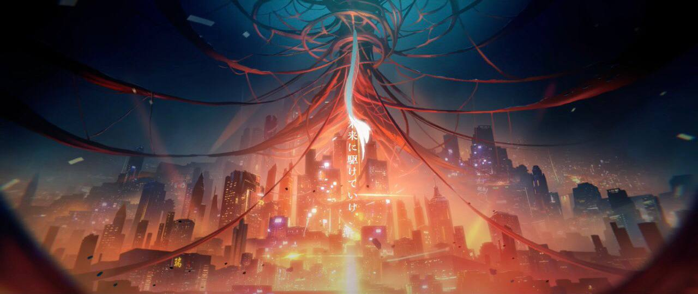
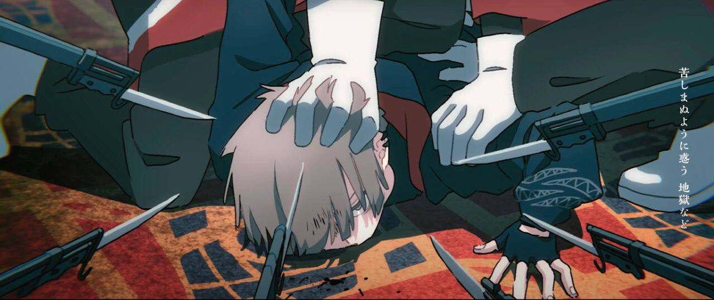
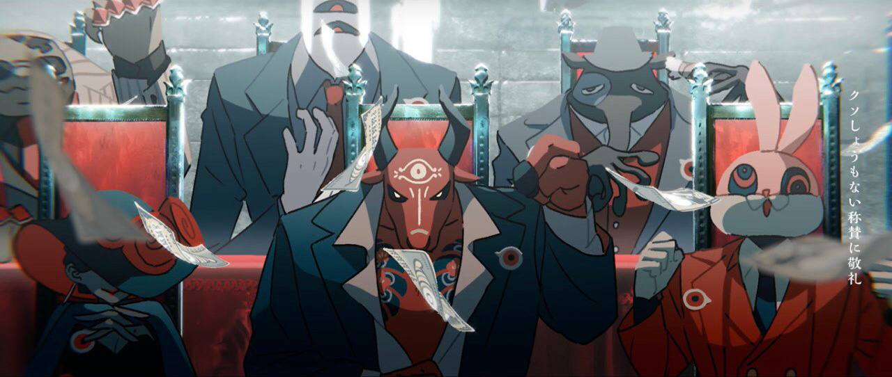
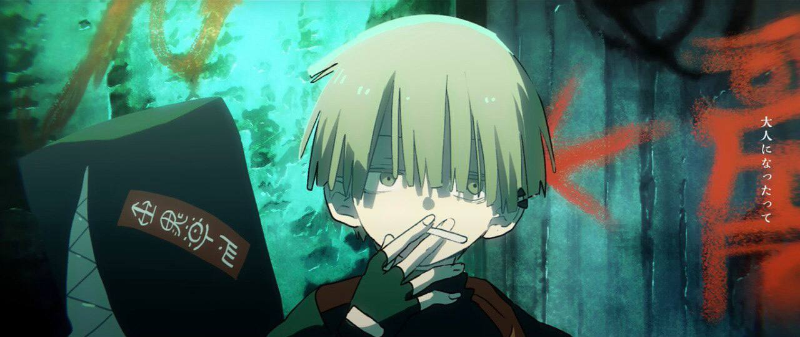
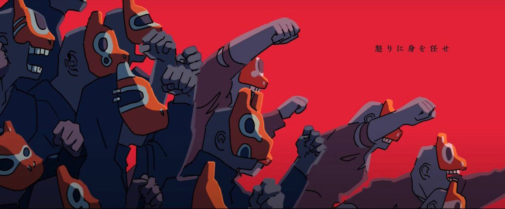
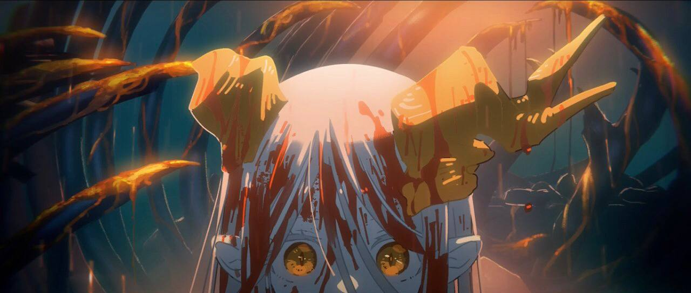
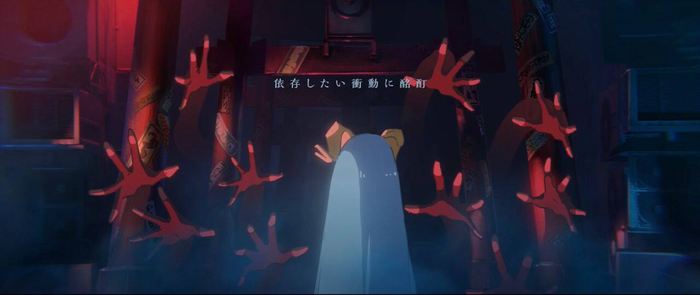
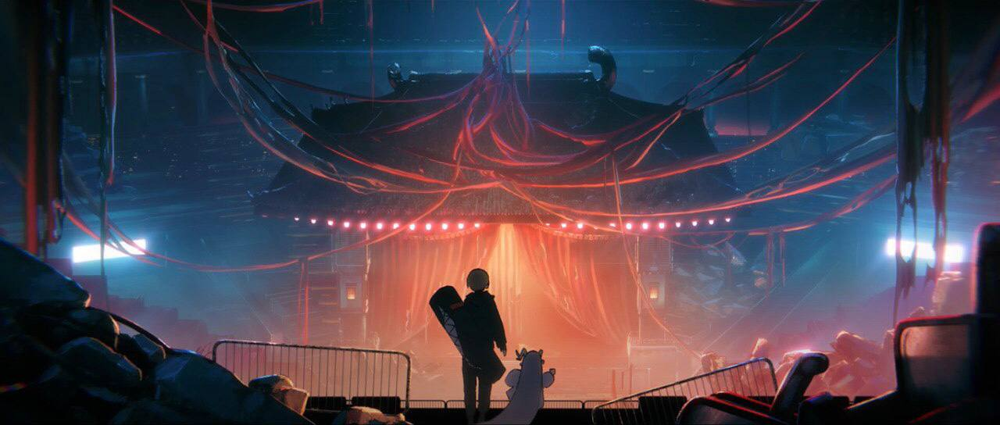
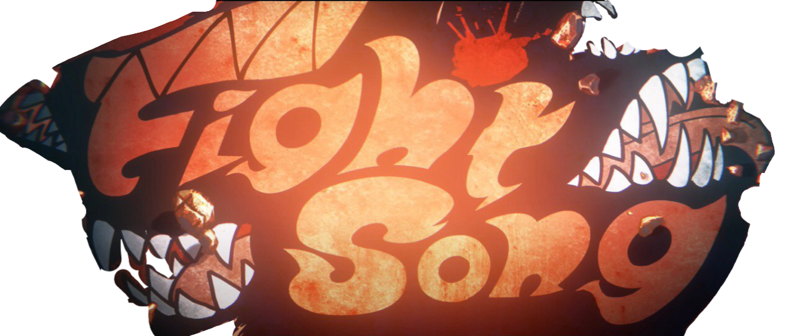

Fight Song é uma música lançada pela banda Eve, sendo feita originalmente para tocar durante o encerramento de um dos 12 episódios do anime Chainsaw Man. Seu videoclipe estilo anime mostra acontecimentos futuros de um mangá e light novel originais da banda chamado Kara no Kioku em seu mundo repletro de monstros e criaturas sobrenaturais, com uma trama a ser desenvolvida continuamente durante outros videoclipes da banda.